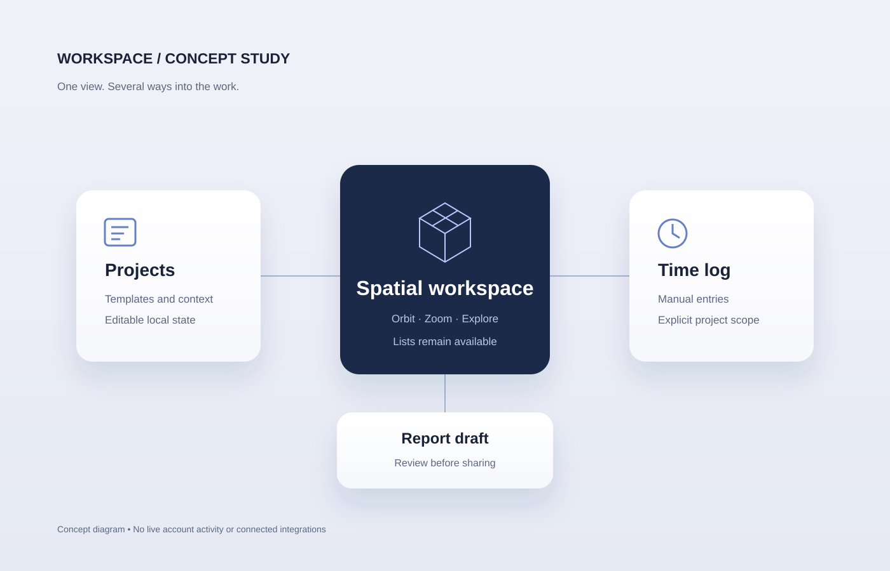

Reverse engineering
Independent study of software behavior, internal structures and real-time data. Private research and source code stay private.
Independent reverse engineering, programming and interactive product work. I explore how software behaves and turn complex ideas into usable interfaces.
Explore selected workThree layers connect systems thinking, interface design and product development. This is a real-time visual study, not a hardware product.

A spatial way to explore projects, manual time logs and report drafts.
Read the case studyThree connected parts of the way I work.
Independent study of software behavior, internal structures and real-time data. Private research and source code stay private.
Web interfaces, visualizations, audio experiments and practical tools, with an emphasis on understandable behavior and useful controls.
Defining requirements, shaping the experience, evaluating results and iterating with AI-assisted engineering.
A selection of product ideas and practical interfaces. Each case separates what exists from what still needs to be built.
Interactive workspace · Prototype
What if organizing work felt more like navigating a place?
An isometric city brings project templates, manual time entries and report drafts into one interface. The canvas supports orbit, zoom and a reset view, while conventional lists keep the same work accessible.
Use the city as another way into the work, while retaining lists and direct controls. Keep time entries manual rather than presenting guesses as recorded work.
The visible projects and activity are examples. The prototype does not show live agents or connected workplace activity.
Product direction, visual reference selection, requirements and iterative feedback; implementation developed with AI assistance.
Language practice · Prototype
Start with curiosity. Make language practice part of the conversation.
A learning concept combines topic selection, adjustable correction styles and session recaps with an original melody and a tap-timing activity.
“I am agree.”
Illustrative excerpt from a deterministic correction rule, not a live AI response.
Let the learner choose the subject and how often to receive corrections. Keep conversation, learning and music in one coherent product rather than separate utilities.
Conversations are scripted and correction rules are limited. No AI model, microphone, speech recognition, pronunciation scoring or vocal-pitch assessment is connected. The rhythm activity measures taps only.
Original product concept, learning experience requirements and iteration priorities; AI-assisted interface, implementation and test preparation.
Spatial guidance · Simulation
Explore the finding experience before connecting the hardware.
A direction-and-distance prototype uses a virtual target and manual heading to explore nearby, behind-you and further-away states. An optional camera background lets the interface be considered in context.
Separate interaction design from uncertain hardware access. Make simulated values unmistakable and preserve usable controls when the camera is unavailable.
There is no live AirTag, GPS, Bluetooth or Ultra Wideband connection. The marker is not spatially anchored. This is an interface simulation, not a tracker or a safety device.
Problem definition, desired finding experience and hardware questions; AI-assisted simulation, interface and test planning.
Calendar-driven business modeling, scenario comparisons and role-based views. The underlying project uses TypeScript, Vite and Supabase. Private business data and source are omitted here.
Company and venue websites, bilingual presentation and event administration workflows. Product requirements and repeated UX feedback center on making everyday tasks easier.
I work with AI throughout the build process. My contribution includes product ideas, requirements, design direction, feedback and iteration. Implementation and test preparation are AI-assisted.
Computer scientist with experience in business management and inventory operations. Based in Greater Santiago, Chile.
View LinkedIn profileMastercajas S.A.S
Jorge Barzelatto & Cia Ltda
University studies
Recognition for Spring 2019 academic achievement.
Initiated active member
Languages and tools reflected in my projects and public professional profile.
These projects involve AI-assisted engineering. Repository ownership is not presented as proof that every line was written independently.
Explore the work, the decisions behind it and the technologies used to bring it to life.
Back to the top